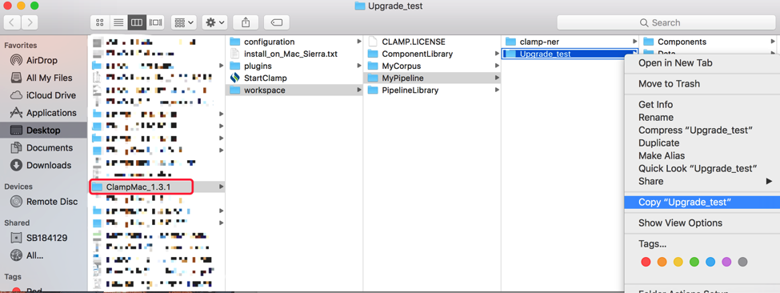
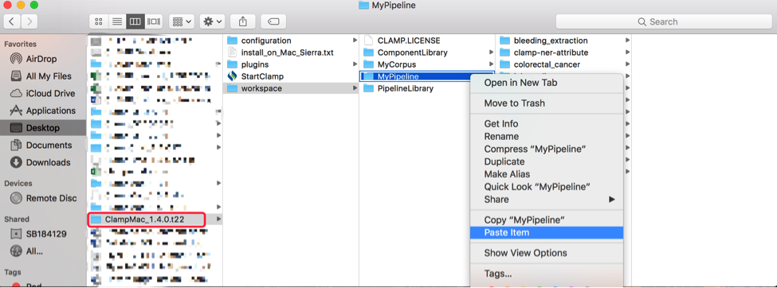

CLAMP is a comprehensive clinical Natural Language Processing software that enables recognition and automatic encoding of clinical information in narrative patient reports. In addition to running clinical concept extraction as well as annotation pipelines, the individual components of the system can also be used as independent modules.
Here we show an example on how to upgrade CLAMP from previous version 1.3.1 to the new version 1.4.0.
On Windows, simply copy contents of your previous work folder (i.e.
from older Clamp_x.xx.xx_win\workspace\MyPipeline\ contents to new
ClampWin_1.4.0\workspace\MyPipeline\ contents) using Windows Explorer
and restart CLAMP if it’s already running. On startup, CLAMP will recognize
these projects and import them into your workspace.
On MacOSX, similarly copy contents of your previous work folder (i.e. from older
ClampMac_x.xx.xx /workspace/MyPipeline/ contents to new ClampMac_1.4.0/workspace/MyPipeline/
contents) using Finder and restart CLAMP if it’s already running. On startup, CLAMP will
recognize these projects and import them into your new workspace.
Here is the example how to upgrade CLAMP from old version to 1.4.0.
1. Find your pipeline project from old version folder, for example:

2. Copy them to a new CLAMP 1.4.0 work folder.

3. Restart CLAMP 1.4.0, CLAMP will recognize these projects and import them into your new workspace.
The download time varies by location, and internet connection speed. We recommend only use high-speed broadband connections to download CLAMP.
If you become disconnected while files are being downloaded, simply reconnect to the internet and retry your download.
The CLAMP System is provided as a .zip file. After downloading the compressed file, unzip the package in the directory of choice and the system is ready for use. You can run the system by double clicking on the startCLAMP icon to launch the GUI of CLAMP. Installation instructions are the same for both Windows and Mac computers. For the CLAMP command line version please refer to the "ReadMe" file.
Remember that in order to run clamp on your machine, you need to have elevated (administrative) privileges on your machine. When you run CLAMP on you Mac for the first time, it asks for your permission to run it as "UnSafe" application. This is because CLAMP is not downloaded from Apple Store. You can simply allow your operating system to run CLAMP and use it on your machine.
The only prerequisite necessary to compile CLAMP is JRE 1.8 (Java Runtime Environment). Please ensure that you have Java 8 or higher installed in your system.
Run the following command in both Mac and Windows to check your version:
java –version
You can download JRE 8 from Oracle website.
It is a number that will be provided for you by CLAMP technical team. You need this number to activate the full version of CLAMP GUI version.
For more information, visit download page.
The high performance language processing framework in CLAMP consists of the following key building blocks:
NLP Pipelines: CLAMP components builds on a set of high performance NLP components that were proven in several clinical NLP challenges such as i2b2 , ShARe/CLEF , and SemEVAL.
Machine Learning and Hybrid Approaches: The CLAMP framework provides alternative components for some tasks, utilizing rule based methods and/or machine learning methods such as support vector machines, conditional random fields, and neural network based word embedding algorithms.
Corpus Management and Annotation Tool: The user interface also provides required tools to maintain and annotate text corpora. It hosts an improved version of the brat annotation tool for textual annotations.
Here is the list of the components that are included in CLAMP:
Sentence Detector
Tokenizer
POS Tagger
Section Identifier
Named Entity Recognizer
Negation Assertion Recognizer
Chunker
Ruta Rule-Engin
UMLS Encoder, and finally
User-Defined components
Since CLAMP is a stand-alone eclipse plugin, its folder structure is similar to other eclipse plugins. For more information, check out CLAMP user manual at the top of the page.
The pre-annotated notes are crawled from http://www.mtsamples.com that has lots of publicly available de-identified notes. But only 'discharge summary' and 'general medicine' are included in CLAMP. We annotated all the 'problem', 'treatment' and 'test' mentions in the notes, based on the I2B2 2010 NER guideline. i2b2 Concept Annotation Guideline
The CLAMP System was developed by Dr. Hua Xu's team group from the School of Biomedical Informatics at the University of Texas Health Science Center in Houston.
For technical issues, please contact: Jianfu.Li@uth.tmc.edu
For any other issues, please contact: Hao.Ding@melax.com
This is our CLAMP-support website: https://github.com/UTHealth-CCB/clamp-support
Center for Computational Biomedicine
School of Biomedical Informatics
The University of Texas Health Science Center at Houston
7000 Fannin St, Houston, TX 77030
License Support
Hao Ding - Director of Operations
713-208-8195
Jianfu Li - Research Scientist
713-500-3934